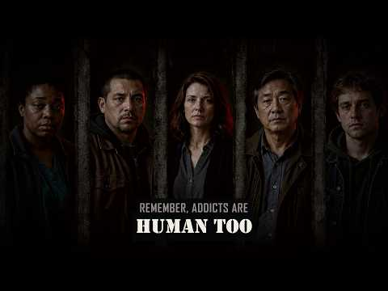

YouTube player · Press play when you’re ready. Open on YouTube ↗
Watch
Human Too
From Human After All, by GhostHeart.
Album 05 / 09 · GhostHeart
No label tells the whole story.

Read · The album story
HUMAN AFTERALL is for everyone who has ever been reduced to a label—the addicted, abused, judged, mentally ill, outcast, broken, or written off.
Behind every mistake, scar, relapse, diagnosis, and bad decision is a human being with a story most people never stopped to hear.
These songs don’t excuse the damage people cause. They refuse to believe that pain, failure, or the worst chapter of someone’s life erases their humanity. They speak for survivors learning to feel again, people fighting battles in silence, and anyone trying to become more than what they have done—or what was done to them.
No label tells the whole story. We are imperfect, wounded, learning, and still trying.
We are Human Afterall.
This album doesn’t ask you to look away from the truth. It asks you to look closer.
Listen · The songs
2 songs to spend some time with.


Watch · Stay with the story
YouTube player · Press play when you’re ready. Open on YouTube ↗
Watch
From Human After All, by GhostHeart.
YouTube player · Press play when you’re ready. Open on YouTube ↗
Watch
From Human After All, by GhostHeart.